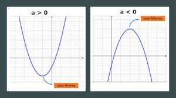

Primeiramente, precisamos saber o que é um vértice, ou como podemos chamar também, ponto de máximo e mínimo:
Um vértice é o ponto da função quadrática. É aonde a parábola irá mudar sua direção, se irá ficar crescente ou decrescente. Quando a concavidade da parábola está em direção para baixo, significa que o vértice é o ponto máximo, então consequentemente quando a concavidade está para cima, o vértice é o ponto mínimo.
Teremos duas formas para encontrar o vértice:
Como podemos ver, as duas formas funcionam muito bem, vai da preferência de cada um qual usar, em minha opinão a segunda forma é a mais simples de fazer.
O motivo pelo qual eu escolhi essa vertente de conteúdo: escolhi esse conteúdo pois desde o início achei ele muito fácil e simples, gosto muito de encontrar os vertíces, ainda mais por estar ligado a bhaskara também.